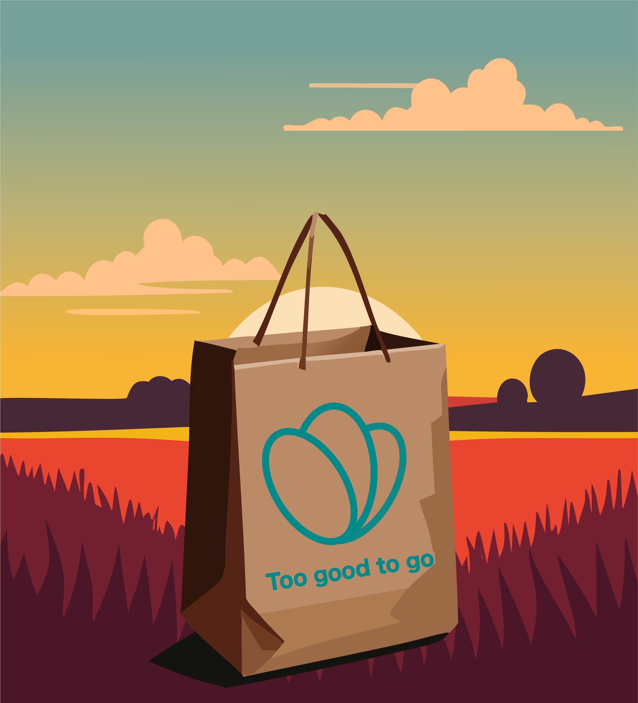

Waarom is too good to go begonnen?
Voedselverspilling is een groot probleem over de wereld. In 2015 gooide de gemiddelde Nederlander jaarlijks zo'n 47 kilo weg.
Door verschillende duurzame initiatieven waaronder too good to go, is dit in 2022 gedaald naar 33,4 kilo per inwoner.
Als steeds meer mensen gebruik maken van too good to go zal dit nummer alleen maar meer gaan dalen.

Waarom is too good to go duurzaam?
Het doel van too good to go is om voedselverspilling te voorkomen. Dit is duurzaam voor verschillende redenen.
Ten eerste kost voedselproductie niet niks. Wanneer er eten wordt verspilt worden hulpbronnen zoals water, land en energie onnodig verbruikt.
Too good to go zorgt ervoor dat de druk op het millieu wordt verlaagd en voor het behouden van natuurlijke hulpbronnen.
Daarnaast wordt er bij voedselverspilling onnodig co2 gebruikt bij de productie en transport van het voedsel.
Door verspilling te verminderen, worden de energiebehoefte voor voedselproductie vermindert.